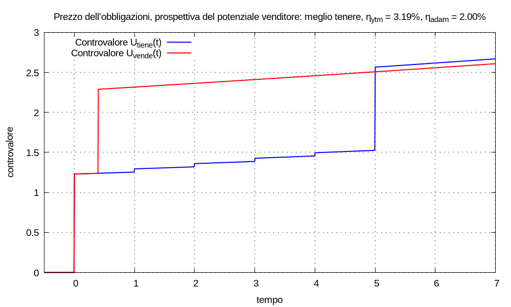
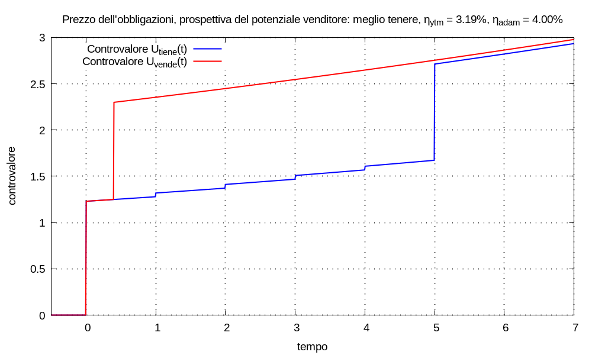

Immaginiamo che Adam Warlock possegga quote dell’obbligazione; egli s’affaccia sul mercato come potenziale venditore.
Adam detiene un portafoglio finanziario, di cui l’obbligazione fa parte, simulabile con un multimetro; egli spera che, in futuro, il portafoglio complementare al titolo incrementerà il controvalore con risposta esponenziale al tasso annuale ηadam; tale tasso atteso varrà sia che Adam venda l’obbligazione, sia che la detenga fino a scadenza.
All’istante tP il controvalore del portafoglio complementare sia Uadam(tP); sfruttando le proprietà della funzione esponenziale, rappresentiamo questa giacenza iniziale come risultato d’una movimentazione impulsiva all’istante tP:
Uadam(tP) δ(t - tP)
Se Adam terrà l’obbligazione, la movimentazione del portafoglio risulterà:
Mtiene(t) = Uadam(tP) δ(t - tP) + Σk=0→K Ccedola,k δ(t - tk) + Crimborso δ(t - trimborso)
in cui Uadam(tP) > 0, Ccedola,k ≥ 0, Crimborso > 0 perché sono tutti versamenti nel multimetro; il controvalore del portafoglio complementare risulterà:
Utiene(t) = Uadam(tP) u(t - tP) esp[λadam (t - tP)] +
+ Σk=0→K Ccedola,k u(t - tk) esp[λadam (t - tk)] +
+ Crimborso u(t - trimborso) esp[λadam (t - trimborso)]
Se invece Adam venderà l’obbligazione, la movimentazione risulterà:
Mvende(t) = [Uadam(tP) + P] δ(t - tP)
e il controvalore del portafoglio complementare:
Uvende(t) = [Uadam(tP) + P] u(t - tP) esp[λadam (t - tP)]
La formulazione de Il Criterio è la soluzione della disequazione:
∀t ≥ trimborso Utiene(t) ⋛ Uvende(t)
che abbiamo visto poter ridurre a:
Utiene(trimborso) ⋛ Uvende(trimborso)
quindi se risulta:
Osservato che sia Utiene(t) che Uvende(t) contengono l’addendo:
G(t) = Uadam(tP) u(t - tP) esp[λadam (t - tP)]
definiamo i controvalori:
Vtiene(t) = Utiene(t) - G(t)
Vvende(t) = Uvende(t) - G(t)
cioè:
Vtiene(t) = Σk=0→K Ccedola,k u(t - tk) esp[λadam (t - tk)] +
+ Crimborso u(t - trimborso) esp[λadam (t - trimborso)]
Vvende(t) = P u(t - tP) esp[λadam (t - tP)]
il fatto che possiamo eliminare questo addendo comune significa che i risultati che otterremo nel seguito saranno indipendenti dal controvalore iniziale del portafoglio. Allora possiamo riscrivere la disequazione de Il Criterio come:
Vtiene(trimborso) ⋛ Vvende(trimborso) ⇒ Utiene(trimborso) ⋛ Uvende(trimborso)
cioè, per applicare il criterio, è sufficiente calcolare i valori Vtiene(trimborso) e Vvende(trimborso); ovviamente risulta:
Il controvalore Vvende(trimborso) si calcola con:
Vvende(trimborso) = P esp[λadam (trimborso - tP)]
nella precedente sezione della discussione sul prezzo dell’obbligazioni abbiamo definito il rendimento a scadenza (uguale rendimento effettivo, uguale Yield to Maturity) come il tasso di variazione ηytm = espm1(λytm), rispetto all’unità di tempo, che soddisfa l’equazione d’attualizzazione equivalente agl’effetti futuri per t ≥ trimborso:
P = Σk Ccedola,k esp[λytm (tP - tk)] + Crimborso esp[λytm (tP - trimborso)]
Possiamo ottenere un’equazione simile per il controvalore Vtiene(trimborso) scrivendo:
Vtiene(trimborso) = A esp[λadam (trimborso - tP)]
in cui A è la somma di tutti gl’impulsi delle cedole e del rimborso attualizzati all’istante tP secondo il tasso λadam:
A = Σk Ccedola,k esp[λadam (tP - tk)] + Crimborso esp[λadam (tP - trimborso)]
Osservato che nell’equazioni di Vvende(trimborso) e Vtiene(trimborso) compare lo stesso esponenziale esp[λadam (trimborso - tP)]: comprendiamo come si possa riformulare la disequazione de Il Criterio come:
A ⋛ P ⇒ Vtiene(trimborso) ⋛ Vvende(trimborso)
cioè, per applicare il criterio, è sufficiente calcolare il valore A e conoscere il valore P; perciò se:
Confrontiamo l’equazioni:
A = Σk Ccedola,k esp[λadam (tP - tk)] + Crimborso esp[λadam (tP - trimborso)]
P = Σk Ccedola,k esp[λytm (tP - tk)] + Crimborso esp[λytm (tP - trimborso)]
abbiamo già osservato la proporzionalità inversa tra la remunerazione (e il rendimento) e il valore attualizzato dei capitali, perciò possiamo riformulare la disequazione de Il Criterio come:
ηadam ⋚ ηytm ⇒ λadam ⋚ λytm ⇒ A ⋛ P
perciò se:
Possiamo riassumere tutte le deduzioni che trasformano il criterio:
ηadam ⋚ ηytm ⇒ λadam ⋚ λytm ⇒ A ⋛ P ⇒
⇒ Vtiene(trimborso) ⋛ Vvende(trimborso) ⇒
⇒ Utiene(trimborso) ⋛ Uvende(trimborso) ⇒
⇒ ∀t ≥ trimborso Utiene(t) ⋛ Uvende(t)
Esempio (sulla prospettiva del venditore) Adam possiede un portafoglio di titoli finanziari che include quote d’un’obbligazione ‘pincopalla’. All’istante tinizio = 0 il controvalore del portafoglio vale U(tinizio) = 1,23; Adam spera che, in futuro, indipendentemente dalla movimentazione, il portafoglio complementare al titolo abbia incremento esponenziale con remunerazione λadam = log1p(ηadam) che specificheremo nel seguito.
Il contratto dell’obbligazione ‘pincopalla’ prescrive il pagamento di cedole e un rimborso finale descritti dalla seguente tupla di valori al netto di tutto:
{ (1; 0,04), (2; 0,04), (3; 0,04), (4; 0,04), (5; 0,04), (5; 1), }il Tribunal ha stabilito che: le quote possano essere vendute al tempo tP = 0,4 al prezzo P = 1,05 (che include il rateo della prossima cedola).
All’istante tP, Adam si trova di fronte a due universi possibili:
- se terrà l’obbligazione, la movimentazione risulterà, ∀t ≥ tinizio:
Mtiene(t) = U(tinizio) δ(t - tinizio) ++ Σk=1→5 Ck δ(t - tk) + Crimborso δ(t - trimborso)e il controvalore:
Utiene(t) = U(tinizio) u(t - tinizio) esp[λadam (t - tinizio)] ++ Σk=1→5 Ck u(t - tk) esp[λadam (t - tk)] ++ Crimborso δ(t - trimborso) esp[λadam (t - trimborso)]- se venderà l’obbligazione, la movimentazione risulterà, ∀t ≥ tinizio:
Mvende(t) = U(tinizio) δ(t - tinizio) + P δ(t - tP)e il controvalore:
Uvende(t) = U(tinizio) u(t - tinizio) esp[λadam (t - tinizio)] ++ P u(t - tP) esp[λadam (t - tP)]Con il cambiamento di variabile τ = t - tP, possiamo scrivere l’equazione per il calcolo del rendimento a scadenza dell’obbligazione:
P = Σk=1→5 Ck esp(-λytm τk) + Crimborso esp(-λytm τrimborso)risolvendo numericamente risulta:
λytm ≈ 0,0314024 ηytm = espm1(λytm) ≈ 3.19007%
- Convenienza a tenere Supponiamo che sia:
ηadam = 2% λadam = log1p(ηadam) ≈ 0,0198026Essendo ηytm > ηadam ad Adam conviene detenere l’obbligazione fino a scadenza. Verifichiamo Il Criterio; il valore attualizzato all’istante tP delle cedole e del rimborso, con il tasso ηadam risulta:
A ≈ 1,10297 > P = 1,05da cui:
Vtiene(trimborso) ≈ 1,20816 > Vvende(trimborso) ≈ 1,15014in definitiva:
Utiene(trimborso) ≈ 2,55547 > Uvende(trimborso) ≈ 2,49744
- Convenienza a vendere Supponiamo che sia:
ηadam = 4% λadam = log1p(ηadam) ≈ 0,0392207Essendo ηytm < ηadam ad Adam conviene vendere l’obbligazione all’istante tP. Verifichiamo Il Criterio; il valore attualizzato all’istante tP delle cedole e del rimborso, con il tasso ηadam risulta:
A ≈ 1,01581 < P = 1,05da cui:
Vtiene(trimborso) ≈ 1,21665 < Vvende(trimborso) ≈ 1,25760in definitiva:
Utiene(trimborso) ≈ 2,68984 < Uvende(trimborso) ≈ 2,73079